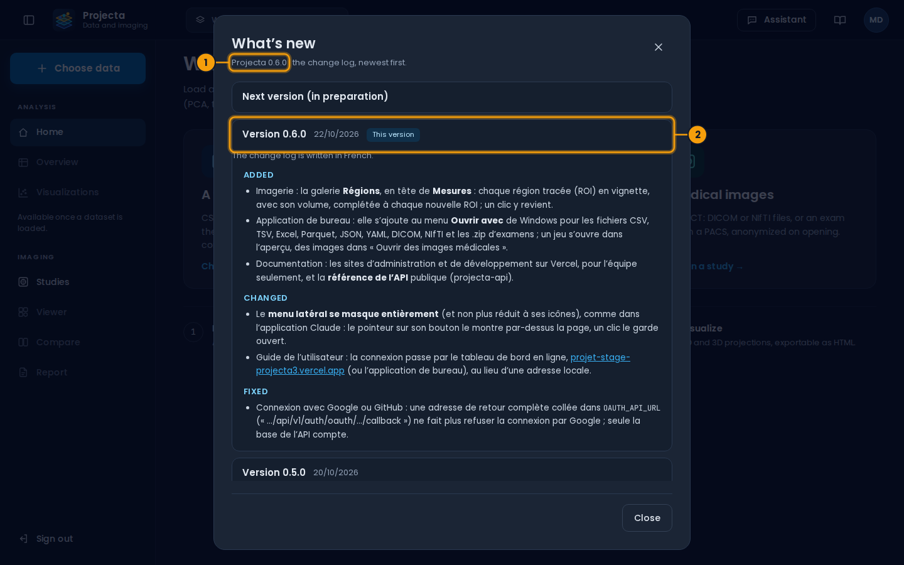

What’s new¶
What changes from one version to the next. In the application, Account › What’s new shows the same thing.

- The version you use.
- What it brought (open); the previous versions below.
Written in French
The change log of Projecta is written in French, as below.
Non publié¶
0.7.1 - 2026-10-24¶
Modifié¶
- Le tableau de bord en ligne a une nouvelle adresse, plus courte : https://projecta-dash.vercel.app ; le guide, Nouveautés et la référence de l’API y mènent.
Corrigé¶
- Application de bureau : après la connexion avec Google ou GitHub dans le navigateur, l’application ouvre le tableau de bord ; elle restait sur la page de connexion.
0.7.0 - 2026-10-24¶
Ajouté¶
- Pages de connexion, d’inscription et de mot de passe oublié sur tablette (Projecta à gauche, le formulaire à droite) et sur téléphone (une colonne ; créer un compte commence par Google et GitHub) : le nom de chaque champ au-dessus de lui, Google et GitHub avec leur nom.
- Le domaine d’un espace de travail (imagerie médicale, recherche clinique, santé publique, analyse de données) : demandé une fois avec des cartes, choisi à la création d’un espace, changé dans Compte › Paramètres ; le menu, le bouton principal, l’accueil et les suggestions de l’assistant suivent. La version lancée depuis le projet ajoute la géomatique (SIG).
- Imagerie, onglet Affichage (maquette 32) : chaque plan en coupe ou en projection sur une épaisseur (MIP, MinIP, moyenne) ; la fusion TEP/TDM (bouton Fusion) : la TEP en couleurs sur la TDM, alignée par les coordonnées DICOM, son opacité, ses couleurs, sa fenêtre en SUV, la MIP de la TEP qui tourne, et sous la croix la valeur, le SUVmax et le SUVmoy.
- Application de bureau : travailler sans connexion (maquettes 68 à 72). Ce qui a été ouvert reste lisible, chiffré sur l’ordinateur ; les changements attendent la reconnexion (pastille « Hors ligne · n changements en attente », liste annulable) et partent d’eux-mêmes, un même élément changé en ligne entre-temps demandant lequel garder ; « Continuer hors ligne » au démarrage ; Compte › Paramètres › Hors ligne.
Modifié¶
- Après un export (graphique, jeu de données, examen), l’application de bureau enregistre le fichier dans Téléchargements\Projecta, sans question, et en montre le chemin complet avec Ouvrir le dossier ; dans le navigateur, le message dit où le trouver (le dossier des téléchargements, Ctrl+J).
- Application de bureau : au démarrage, une seule barre Connexion à Projecta avec son pourcentage ; sans réponse du serveur, l’écran Échec de la connexion à Projecta et un nouvel essai de lui-même (15 s, 30 s, puis chaque minute), sans bouton ni détails techniques dans l’application installée.
- Sites de documentation : plus de bandeau « Made with Zensical » en bas des pages ; la page d’une adresse qui ne mène nulle part (404) tient sur un écran, sans défiler.
Corrigé¶
- Compte › Nouveautés : une adresse écrite entre chevrons dans le journal devient un lien, sans les chevrons.
- Les listes déroulantes (domaine, taille des pages, fenêtre de l’imagerie…) prennent la police du tableau de bord.
- Le lien du tableau de bord en ligne (guide, Nouveautés) mène au bon site, https://projecta-dash.vercel.app : l’adresse projecta-dashboard.vercel.app appartient à un autre compte Vercel.
Sécurité¶
- Bibliothèques mises à jour pour des failles connues : certifi, requests, python-dotenv et scikit-learn (1.5.2).
0.6.0 - 2026-10-22¶
Ajouté¶
- Imagerie : la galerie Régions, en tête de Mesures : chaque région tracée (ROI) en vignette, avec son volume, complétée à chaque nouvelle ROI ; un clic y revient.
- Application de bureau : elle s’ajoute au menu Ouvrir avec de Windows pour les fichiers CSV, TSV, Excel, Parquet, JSON, YAML, DICOM, NIfTI et les .zip d’examens ; un jeu s’ouvre dans l’aperçu, des images dans « Ouvrir des images médicales ».
- Documentation : les sites d’administration et de développement sur Vercel, pour l’équipe seulement, et la référence de l’API publique (projecta-api).
Modifié¶
- Le menu latéral se masque entièrement (et non plus réduit à ses icônes), comme dans l’application Claude : le pointeur sur son bouton le montre par-dessus la page, un clic le garde ouvert.
- Guide de l’utilisateur : la connexion passe par le tableau de bord en ligne, https://projecta-dash.vercel.app (ou l’application de bureau), au lieu d’une adresse locale.
Corrigé¶
- Connexion avec Google ou GitHub : une adresse de retour complète collée
dans
OAUTH_API_URL(« …/api/v1/auth/oauth/…/callback ») ne fait plus refuser la connexion par Google ; seule la base de l’API compte.
0.5.0 - 2026-10-20¶
Ajouté¶
- Guide de l’utilisateur : Télécharger pour Windows (l’installateur, et la version portable) sur l’accueil et la page de l’application de bureau.
- Serveur :
REDIS_URLpour un Redis hébergé (connexion chiffréerediss://), comme celui de l’intégration Redis Cloud de FastAPI Cloud, etDATASET_CACHE_HOURSpour la durée d’un jeu chargé dans Redis. Une page de l’administration dit comment héberger l’API sur FastAPI Cloud, pour se connecter sans Docker. - Imagerie : la vue zoome sur la ROI tracée pour la regarder de près ; un clic sur son nom, dans Mesures, y revient.
- Tableau de bord : une page 404 pour une adresse fausse ou ancienne (retour à l’accueil, ou choisir des données).
- Documentation : une page 404 sur chaque site, avec la recherche et les premières pages.
- API :
/docsaux couleurs de Projecta (logo, liens, santé de l’API) et/reference, une référence en trois colonnes avec des exemples de code. - Le tableau de bord en ligne, en https (Vercel) ; l’application de bureau et le tableau de bord utilisent l’API en ligne par défaut : plus besoin de Docker pour essayer Projecta.
- Le tableau de bord sur tablette (tout, à la taille du doigt) et sur téléphone, pour consulter : jeux récents, examens, aperçu et visualisation en deux onglets, visionneuse plan par plan, examens partagés.
Modifié¶
- Le guide de l’utilisateur est publié seulement sur GitHub Pages : https://adama-r.github.io/Projecta/.
- Application de bureau : elle attend jusqu’à 30 s qu’une API en ligne réponde (elle se réveille après une pause).
- Licence : Projecta est gratuit à utiliser pour l’essayer, tous droits réservés (plus de licence MIT).
0.4.0 - 2026-10-20¶
Ajouté¶
- Assistant (bouton en haut à droite) : il répond sur l’écran ouvert et propose des colonnes, le traitement des cases vides, la vue 2D ou 3D, un brouillon de compte rendu ; rien ne change sans « Appliquer ». Réglages et journal (30 jours) par espace de travail ; jamais les images ni l’identité des patients. Il s’active avec une clé de l’API Anthropic.
- Accueil : une carte « Des images médicales ».
make local: Redis seul dans Docker, l’API et le tableau de bord sur la machine.- Documentation en trois sites : le guide de l’utilisateur (public, aussi dans l’application de bureau), l’administration et le développement (internes) ; pages sur la configuration, la sécurité, l’assistant, l’imagerie, l’hébergement (Vercel, Cloudflare), les comptes du projet, MCP et n8n.
CLAUDE.mdetAGENTS.md: le projet expliqué aux assistants de code.- Documentation : des captures d’écran avec des repères numérotés, et ce que montre chaque numéro, sur les pages des trois guides.
- Application de bureau : Aide › Envoyer un avis… (suggestion, problème ou question), avec les informations techniques si vous le voulez ; gardé sur l’ordinateur si le serveur ne répond pas.
- Se connecter avec Google ou GitHub (boutons ronds sous le formulaire, s’ils sont configurés) : le compte est créé, ou relié à celui de la même adresse vérifiée. Profil › Comptes reliés pour relier ou délier ; un compte créé ainsi peut définir un mot de passe. Dans l’application de bureau, la page de Google ou GitHub s’ouvre dans le navigateur, puis revient à l’application.
- Imagerie, onglet Balises : toutes les balises DICOM de la série, avec une recherche, des filtres (patient, examen, image, retirées ou remplacées), ce que l’anonymisation a fait de chacune et un export CSV.
- Imagerie, Dose de cet examen (onglet Informations) : CTDIvol et PDL du scanner, traceur et activité de la TEP, dose efficace estimée, et le cumul des examens du patient sur 12 mois.
- Une TEP-TDM de synthèse s’ajoute aux examens d’essai.
- Imagerie, Exporter ou partager : la vue affichée (PNG), le ciné en vidéo, les images de la série (JPEG), la série DICOM anonymisée, le volume NIfTI ; mesures, code de l’examen et barre d’échelle incrustés au choix.
- Imagerie, Segmenter : un clic dans une lésion propose son contour en 3D (croissance de région), ou au-dessus d’un seuil ; pinceau et gomme pour corriger ; volume de chaque lésion, rendu 3D en couleur ; « Valider » garde les lésions et leurs caractéristiques, à ajouter à une cohorte ou à exporter en masque NIfTI.
- Documentation : un assistant sur chacun des trois sites (bouton en bas à droite) : il trouve dans le site le passage qui répond, avec ses liens ; si l’administrateur l’active, il rédige la réponse à partir de ces passages. Les secrets collés sont masqués avant l’envoi.
- Application de bureau : mises à jour. Au démarrage, une notification propose la nouvelle version ; Aide › Rechercher des mises à jour… montre ses nouveautés, la télécharge, vérifie son empreinte, puis « Redémarrer et installer ». Jamais forcée.
- Imagerie sur tablette : une grande vue, les séries à droite, des boutons pour le doigt ; glisser fait défiler les coupes, deux doigts zooment, un appui long règle la fenêtre ; « Ciné » fait défiler les coupes. La session se ferme après 15 minutes sans activité.
- Imagerie, liens de partage : un examen anonymisé s’ouvre en lecture seule, sans compte, pendant 24 heures, 7 ou 30 jours, avec un code d’accès à envoyer à part ; liste des liens actifs, nombre d’ouvertures, révocation.
- English : menu du compte › Langue (Français ou English). Le tableau de bord, l’application de bureau (menus et fenêtres) et les réponses de l’assistant passent en anglais ; le choix est gardé dans le compte. Les données, elles, ne sont jamais traduites, et ce journal reste en français.
- Le guide de l’utilisateur en anglais (menu de langue en haut de chaque page, qui ouvre la même page dans l’autre langue), avec ses captures et son assistant.
- Visualisations, Exporter : HTML, PNG, SVG, PDF, JPEG ou WebP. Les images sont dessinées par le navigateur : elles marchent avec ou sans Docker, et dans l’application de bureau.
- Les fichiers chargés sont vérifiés avant d’être gardés : contenu
conforme à l’extension, pas de macros Excel, pas de fichier fait pour
saturer le serveur ; refusés avec la raison. À l’export (CSV, Excel),
une cellule qui commencerait une formule (
=,+,-,@) reste du texte. - Serveur distant : un lien GitHub (dépôt privé : avec un jeton), Google Drive, Google Sheets ou Dropbox collé tel quel est téléchargé.
- Assistant : Ollama au choix de Claude, gratuit (Ollama Cloud, avec des limites d’usage) ou sur votre machine ; les réglages de l’assistant disent quel modèle répond.
- Documentation : flèches « page précédente / suivante » en bas de chaque page, police de la documentation de FastAPI (Roboto) ; sur le site de développement, la référence du code, écrite à partir des docstrings (que son assistant lit aussi).
/docset/redocde l’API portent le logo de Projecta ; chaque groupe de routes y est décrit (backend/metadata.py).
Modifié¶
- Redis : l’API se connecte avec son propre utilisateur, limité aux clés
de Projecta ; l’utilisateur
defaultest désactivé ; un utilisateuradminpour la maintenance. - Documentation construite avec Zensical (à la place de MkDocs).
- Logfire : métriques du processeur et de la mémoire.
- En-tête commun à tous les fichiers Python.
- Nouveau logo : trois plans de coupe empilés et les points d’une projection ; icônes de l’onglet, de l’application de bureau et de la documentation ; sous-titre « Données et imagerie ».
- E-mails : envoi possible sans compte Gmail (Brevo, gratuit) ; adresse
de réponse
SMTP_REPLY_TO(avec un expéditeur « noreply »). - Pages de connexion, d’inscription et de mot de passe oublié : chaque bloc a sa place (plus rien ne se chevauche) ; une seule erreur, lisible, au-dessus du bouton, au lieu de deux petites lignes rouges.
- Exporter vers une base de données : les trois choix « Si la table existe déjà » tiennent sur une ligne, avec une phrase qui dit ce que fait le choix ; la liste « Colonnes créées » est plus haute.
/api/v1répond (nom, version, liens vers la documentation et la santé de l’API) au lieu d’une erreur 404.- Le menu latéral est réduit à ses icônes ; le pointeur sur son bouton l’ouvre par-dessus la page, un clic le garde ouvert (comme dans l’application Claude).
- Visualisations : la ligne d’origine d’un point s’affiche quand on le clique, plus au survol (les étiquettes s’empilaient).
- Aperçu : l’en-tête tient sur deux lignes (chemin et puces, puis chiffres et boutons) ; le tableau montre plus de lignes. Marges de la page réduites (10 px en haut, 20 px sur les côtés).
- Sécurité : dépendances mises à jour (FastAPI 0.143 et Starlette 1.8, python-multipart, cryptography, urllib3, anyio, aiomysql, Vite…) ; les jetons de connexion sont signés avec PyJWT à la place de python-jose, qui n’a plus de correctif. L’image Docker de l’API est à reconstruire.
Corrigé¶
- La connexion échouait (en local et dans Docker) : l’utilisateur Redis
donné dans
.envn’existait pas, et l’image Docker de l’API ne contenait pas les nouvelles dépendances. - Les tests passent sans fichier
.env(comme dans GitHub Actions). - Pile Docker : le tableau de bord ne se chargeait plus (seul le bouton de la documentation marchait), faute du journal des versions ; il s’ouvre désormais même sans ce fichier.
- Le mot « null » ne s’affiche plus dans un message d’erreur sans conseil, dans la liste des bases SQLite ni dans la fenêtre des cases vides.
- Le guide de l’utilisateur se publie de nouveau sur Vercel (son Python
refusait
pip install), en français et en anglais. - L’API se déploie sur FastAPI Cloud : il lui manquait
fastapi[standard](la commandefastapi run).
0.3.0 - 2026-10-02¶
Ajouté¶
- Le projet s’appelle désormais Projecta : tableau de bord, application de bureau, documentation, installateur Windows.
CHANGELOG.md,RELEASE.md,CONTRIBUTING.md,SECURITY.md, modèles d’issues et de pull requests, mises à jour automatiques des dépendances (Dependabot).- Compte › Nouveautés : ce journal dans le tableau de bord, la version en cours ouverte ; après une mise à jour, une notification le propose une fois.
- Serveur distant (onglet de « Choisir des données ») : charger un fichier d’un lien web (sans authentification, jeton, utilisateur et mot de passe, ou en-tête), d’un stockage S3 / MinIO ou d’un serveur SFTP (mot de passe ou clé privée), avec les dossiers à parcourir et l’aperçu des premières lignes. Les liens et serveurs sont gardés dans l’espace de travail, sans leurs secrets ; un lien peut être téléchargé de nouveau à chaque ouverture.
- Imagerie médicale (menu IMAGERIE) : ouvrir des examens DICOM
(fichiers, dossier,
.zip) ou NIfTI, ou les séries d’un PACS en DICOMweb, anonymisés par défaut (le patient devient un code, le même pour tous ses examens) ; visionneuse en trois plans (MPR) et rendu 3D, fenêtrage, zoom, règle, angle, ROI ; volume des lésions et 18 caractéristiques radiomiques ; cohortes de lésions projetées comme un jeu de données ; comparaison de deux examens avec l’évolution des lésions ; compte rendu (brouillon, images clés, export PDF, validation).make imaging-demoécrit des IRM de synthèse pour essayer. - Journaux et télémétrie : une ligne par requête (route, statut, durée,
utilisateur) avec un identifiant
X-Request-ID; événements d’usage (connexion, chargement, export, visualisation) ; traces Logfire de l’API (SQL, Redis, HTTP) quand un jeton est donné ; erreurs du tableau de bord envoyées à l’API ; journalmain.logde l’application de bureau (Aide › Dossier des journaux). Paramètres › Statistiques d’utilisation coupe les statistiques de navigation. - Redis : un utilisateur dédié (ACL) avec
REDIS_USERNAME. - Documentation : vue d’ensemble du projet en schémas (composants,
fonctions, déploiement, CI, évolution), guide de l’imagerie, publication
sur GitHub Pages et suivi des Actions avec
gh, proposition de connexion avec Google et GitHub.
Modifié¶
- E-mails :
make mail-test TO=…envoie un e-mail de test avec les réglagesSMTP_*; port 465 (SMTP_SSL) ; le certificat du serveur est vérifié ; nouvelle page « E-mails » de la documentation (Mailpit, Gmail). - Visualisations : titre, nom du jeu et réglages sur une ligne, puces plus petites, explication de la méthode derrière un bouton « i » ; les graphiques tiennent sans défilement sur un écran 1 920 × 1 080 à 125 %.
- Pages de bienvenue et de connexion : sans défilement jusqu’à une fenêtre de 1 280 × 600.
- Bouton « Choisir des données » du menu latéral un peu plus grand.
- Workflows GitHub Actions : chaque action est épinglée sur un commit (avec
sa version en commentaire) ; mots de passe de la CI générés à chaque
exécution ; publication de l’application de bureau sans paramètre saisi
à la main ; documentation publiée aussi depuis
trunk.
Sécurité¶
- Imagerie : les examens ouverts (copies de travail) et les cohortes ne sont jamais suivis par Git ; chaque examen n’est visible que de l’utilisateur qui l’a ouvert.
- Serveur distant : l’API refuse de télécharger depuis sa propre machine,
les adresses réservées et, par défaut, les réseaux privés
(
REMOTE_ALLOW_PRIVATE_NETWORKS) ; l’authentification d’un lien n’est pas transmise à un autre serveur lors d’une redirection ; la clé d’un serveur SFTP est vérifiée à chaque connexion.
0.2.0 - 2026-09-30¶
Ajouté¶
- Exporter un jeu chargé vers un fichier (CSV, TSV, Excel, Parquet, JSON, YAML), téléchargé ou rangé sur le serveur, ou vers une table PostgreSQL, MySQL ou SQLite, avec l’aperçu des colonnes créées.
- Cases vides : avant de générer les visualisations, choisir comment compléter les cases vides des colonnes numériques (moyenne, médiane, zéro, valeur fixe), avec le nombre de lignes dessinées.
- Mot de passe oublié : code à 6 chiffres envoyé par e-mail (Mailpit dans la pile Docker), valable 15 minutes.
- Se souvenir de moi : session de 7 jours, adresse remplie à la connexion suivante, session encore ouverte proposée.
- Vos propres bases :
localhostdésigne votre ordinateur même quand l’API tourne dans Docker ; import d’une base SQLite de l’ordinateur. - Application de bureau (Electron) :
make desktop, installateur et version portable pour Windows (make desktop-exe), adresse de l’API réglable, publication par GitHub Release. make dev: API (données en mémoire), tableau de bord et documentation, sans Docker, en une commande.- Logo : favicons, tableau de bord, pages de connexion, documentation, icônes de l’application de bureau.
- Chaque moteur de base de données garde ses propres valeurs dans le formulaire de connexion.
Modifié¶
- Pages de bienvenue et de connexion : fond du tableau de bord, titre du formulaire centré.
- Aperçu : chemin complet du jeu sur toute la largeur, boutons alignés avec les informations du fichier ; pagination centrée sous le tableau.
Corrigé¶
- Le formulaire de connexion à une base ne passe plus sous le pied de la fenêtre sur un écran 1 920 × 1 080 à 125 %.
- Les vues 3D s’affichent dans l’application de bureau sans processeur graphique (WSLg).
0.1.0 - 2026-09-28¶
Première version utilisable, après la migration vers une architecture hexagonale.
Ajouté¶
- API FastAPI sous
/api/v1: comptes et connexion (JWT), espaces de travail et historique (Redis), jeux de données (fichiers et tables PostgreSQL, MySQL, SQLite), visualisations 2D et 3D (PCA, t-SNE, UMAP choisi automatiquement). - Tableau de bord (Vite) : accueil, choix des données, aperçu page par page, colonnes, visualisations Plotly, espaces de travail.
- Lecture des CSV (séparateur, virgules décimales et encodage détectés), Excel, Parquet, JSON et YAML ; import depuis l’ordinateur.
- Pile Docker Compose (PostgreSQL, MySQL, Redis, API, tableau de bord,
documentation) et
make seedpour les données d’exemple. - Tests : unitaires, d’intégration, contre les vrais serveurs, et dans le navigateur (Playwright) ; CI GitHub Actions.
Sécurité¶
- Secrets retirés du dépôt ; mots de passe exigés pour PostgreSQL et Redis ; accès aux fichiers limité au dossier des jeux de données.